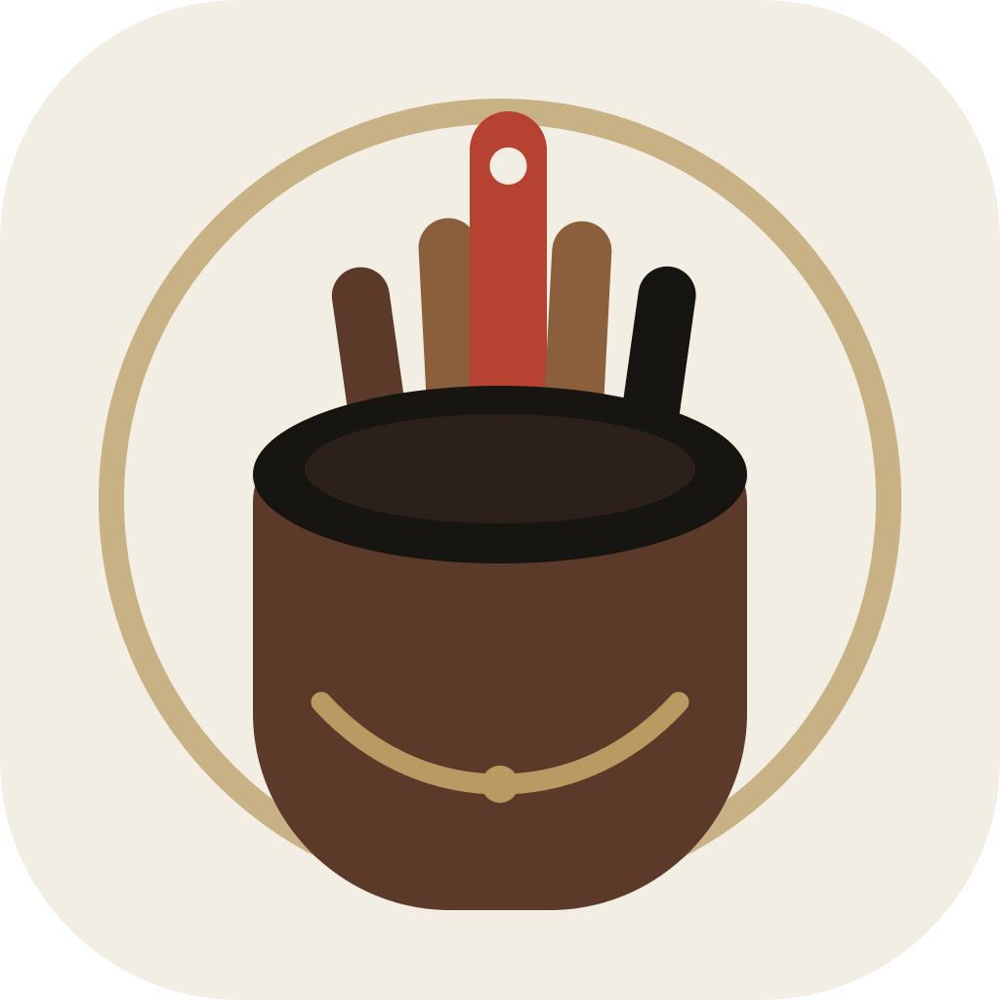
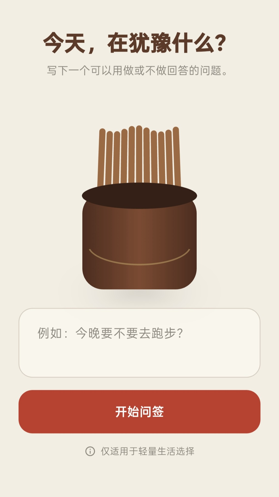
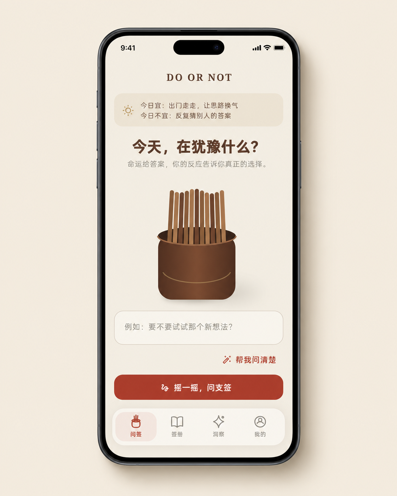
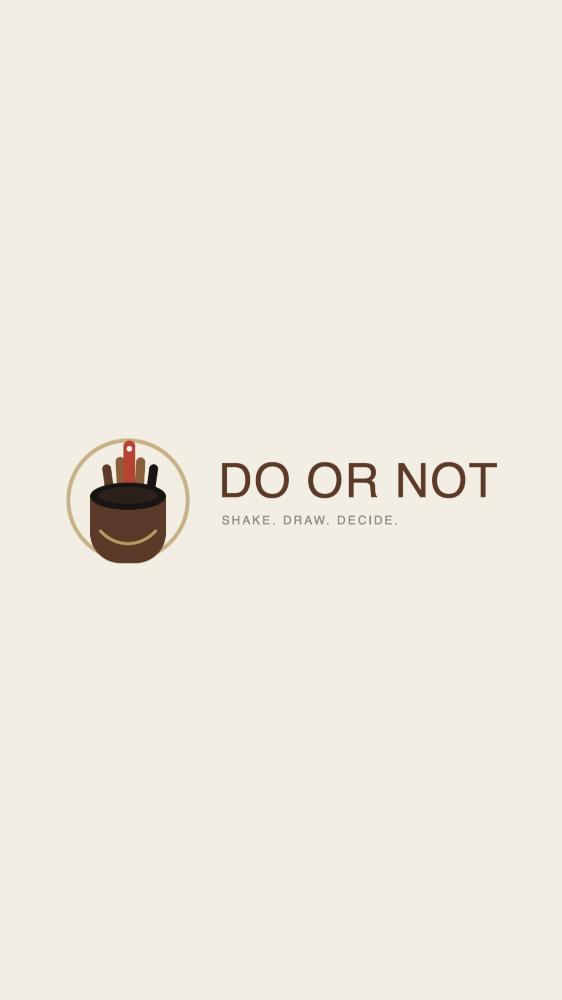
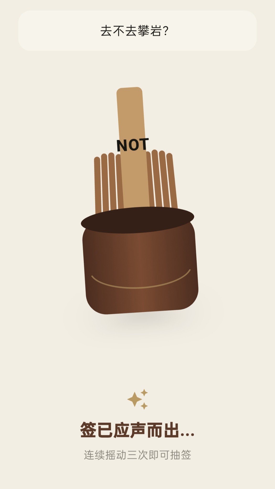
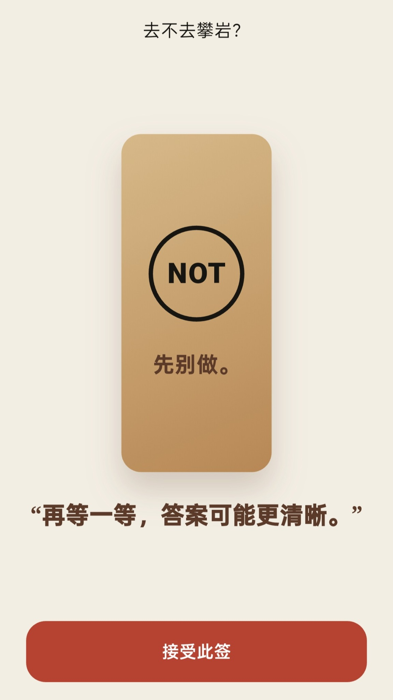

写下问题
把脑海里的犹豫，整理成一个可以用“做”或“不做”回答的问题。

DO OR NOT写下一个可以用“做”或“不做”回答的问题，摇动手机三次， 让 DO OR NOT 给你一个干脆的答案。

新版本加入第一反应、签册追踪、结果回访与月度洞察，让一次抽签不再只是随机结果，而是属于你的选择轨迹。

把脑海里的犹豫，整理成一个可以用“做”或“不做”回答的问题。
连续摇动手机三次，用一点仪式感结束无休止的反复权衡。
得到 DO 或 NOT。答案不替你负责，但会帮你看清第一反应。
暖米色、木质棕和朱砂红延续应用本身的视觉语言。



有时候你缺的不是更多分析，
只是一个让自己开始行动的瞬间。
DO OR NOT 只适用于轻量生活选择，请勿用于医疗、法律、财务或安全相关决策。
当前提供 Android 安装包。下载按钮会自动链接到 GitHub Releases 中最新发布的 APK。